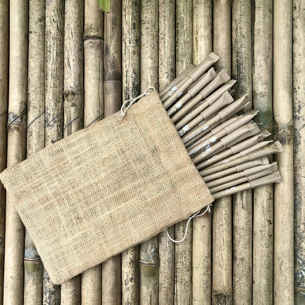
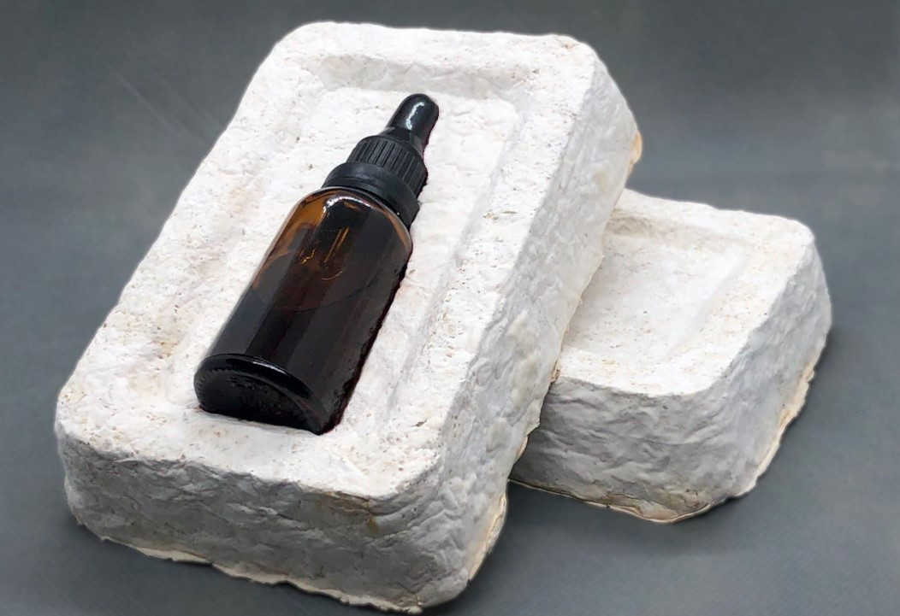
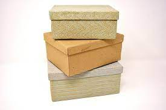

The Era of Eco-Friendly Packging
Plantable Packaging
A piece of packaging that is made of recycled paper and then infused with seeds. When this packaging meets soil, the recycled paper decomposes, leaving the seeds behind. This zero-waste plantable packaging is made with post-consumer materials embedded with seeds so it will definitely show your eco-commitment and promote corporate sustainability.”
Coconut Husk
The husk of a coconut, known as Coir, is a natural fibre found between the shell and outer layer of the coconut. When pressed, this fibrous material can be formed into packing which can often look liike cardboard. The husks separated from the nuts are retted in lagoons up to ten months. The retted husks are then beaten with wooden mallets manually to produce the golden fibre. The fibre is later spun into yarn on traditional spinning wheels called “Ratts”, ready for dyeing and weaving into myriad shades of floor coverings.Rice Husk
Rice husk is a renewable material that has a high silicon content and can be used as a substitute for styrene material in the packaging of electronic items in its packaging.rice husk has also been widely accepted to be degradable in natural soil environment because the main components of it are susceptible to the complex of microorganisms present in soil. A method for manufacturing a container from rice husk includes the steps of comminuting the husk into powder form, mixing the powder with an edible adhesive, with the introduction of steam, to form a paste, forming a blank from the paste, shaping the blank into a primary semi-product, re-shaping the primary semi-product to the desired one.
Mushroom Packaging
Mushroom Packaging is simply made with 2 ingredients: hemp hurds and mycelium. A high-performing packaging solution, cost-competitive, thermally insulating, and water-resistant. Add to the soil to compost in 45 days . Mushroom Packaging consists of 100 percent biodegradable and renewable material that can be recycled directly in and by nature. The entire process takes 8-9 days to complete from start to finish, with two 4-5 day waiting periods.Corn Starch
Corn starch packaging is 30 percent stronger than existing polythene bags. Because they are biodegradable, corn starch bags are likely to appeal to environmentally conscious consumers and represent a niche market for new entrants that could attract a core customer base.Cornstarch is also effective as food packaging since it is 100% food-safe, has a high aroma barrier, and resistance to food fat and oils without the use of coatings or chemicals. Furthermore, cornstarch packaging has low flammability, and the material lends itself well to printing applications.
